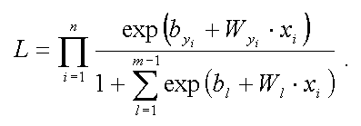
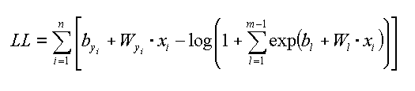

One of the learn methods. |
We want to execute learning process on Bayesian networks which include SoftMax nodes. So, we have learning set for every node in SoftMax node family. This set consists of evidences on every node of the family, it is a matrix, where every coloumn represents one evidence, last element in a column is a SoftMax node value. Our goal is to find out softmax distribution parameters: weight matrix and offset vector. To solve this task we will use the following algorithm. Let’s form a likelihood function for softmax node.  Here n is quantity of experiments, yi is a value of SoftMax node in experiment number i. m is quantity of SoftMax node states. Xi is a column of evidence matrix. To find real distribution parameters, we have to maximize Likelihood function by changing W and b. A point (W and b values), which corresponds to maximum Likelihood, is a point of real distribution parameters. In the case when we have large amount of evidences, Likelihood function is very close to zero. So, it’s better to use likelihood logarithm for maximizing.  To maximize LogLikelihood function, we have used three methods: Gradient method, Conjugate Gradient method and Newton-Ravsen method. |